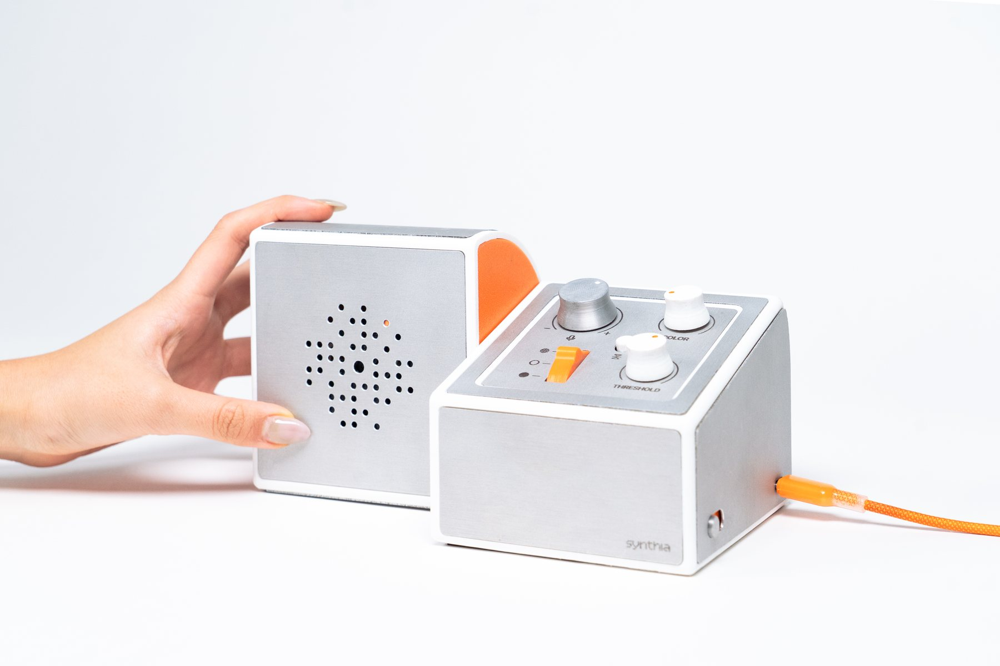

Synthia

Design methodology
HCI/interaction design
Wizard-of-Oz prototyping
Course4.031: Design Studio: Objects and Interaction (Prof. Marcelo Coelho)
Timeline6 weeks, Winter 2025 (second half of the Fall 2025 semester)
TeamJoanne Hong (MIT '27), Pria Sawhney (MIT '27)
Tools
SOLIDWORKS
Arduino IDE
TouchDesigner
Electronics/circuitry
Laser cutting
FDM 3D printing
Sheet metal forming
Synthia combines live video and ambient audio to generate audio-reactive visuals that can be projected back into the room. Synthia's camera module can be rotated to point towards the user or an audience, with an x-axis mirror button available to flip graphics upside down, ensuring usability in either direction. A three-state switch picks between three graphic modes — dots (a particle simulation), lines (edge detection), and solids (pixelation) — while knobs tune audio sensitivity, video threshold and contrast, and color. I built Synthia with Joanne Hong and Pria Sawhney; though work wa heavily collaborative, the focus of my contribution was the mechanical design, fabrication, and electronics.
Context/Motivation
For the second half of the class 4.031 with Marcelo Coelho, our project brief was to design an interactive digital camera using Wizard-of-Oz prototyping — and to reimagine what it means for something to be a "digital camera" and to challenge how people interact with one.
Problem Framing
My team drew inspiration from music technology, especially the audio-reactive visuals of live concerts which seemed to flood the floors with life and excitement -- an atmosphere which we felt could be harder to achieve in other less-equiped, environments. Additionally, we were drawn to the ability of a "transforming" form factor to incite curiousity and excitment in the user. These two requirements shaped everything after that. At a minimum, the camera needed a pitch degree of freedom so it could be aimed. And because the visuals had so many parameters, the controls had to be as intuitive as possible — and fun to play with — using components we could acquire within the limited timeframe.
Process
Form factor
We explored transforming forms through sketches, a cardboard prototype, and a first 3D-printed prototype, then settling on two asymmetrical halves. One half is curved, inviting the user to rotate the camera; the other is a near-rectangular module that holds the control panel, with the slant providing critical directionality for the user to situate themselves. The volume of the electronics we planned to use influenced much of the final size, though we aimed to keep it concise and compact.
Sheet metal forming
Our team desired a high-quality finish that we felt wasn't attainable through a FDM printed alpha prototype. We dreamt of a seamless aluminum facade, but the challenge of matching the continuous curves on our form factor nearly ruled it out. To avoid abandoning the the target form factor and/or material, I designed custom 3D-printed stamping jigs that worked with the clamps we already had in-house, using the sheet metal springback equation* to drive the jig geometry so the aluminum would follow exactly along the intended curve.
R_i / R_f = 4(R_i/t × Y/E)³ − 3(R_i/t × Y/E) + 1
*springback equation used
Electronics and controls
Because the class heavily encouraged Wizard-of-Oz prototyping to focus on physical object design, we used a laptop running TouchDesigner to generate the visuals, and I built the hardware that fed it: an Arduino Micro streaming serial data into TouchDesigner, with a protoboard connecting the encoders, buttons, switches, microphone, and camera. The hardest constraints were housing volume, which shaped the device's overall form, and building an intuitive, fun interaction from available components — which led us to design custom button, knob, and switch caps, using Synthia's signature pop of orange where appropriate.
Pitch magnet-bearing assembly
We wanted the camera to turn smoothly, but time was short, so I leaned into the constraint and used a simple bearing assembly. I 3D-printed the tube shaft in its most favorable print orientation for strength, while keeping it hollow so wiring could pass through and avoid interfering with the shaft in rotation. We found that the rotation of the camera half was smooth, but keeping it at the desire angle was difficult -- likely due to weight imbalance from the irregular geometry and excaberated by the tension from the cables running inside. To resolve this, I imbedded magnets within the immediately adjacent walls of the camera- and control-halves. This resolved the issue, providing the user with 8 distinct angles to use, as well as providing tactile feedback into the rotation of the camera.
Room for Improvement
Synthia was a huge hit at the final class exhibition, creating stunning visuals and providing tons of fun and wonder to all who used. However -- given more time -- there were a few design choices that I could have made to make the design more rigorously engineered. Though I chose to print the tube-shaft since there wasn't time or budget to procure a metal rod, I would opt against doing so in most other situations. I was incredibly proud of thinking of and designing the sheet metal stamps, but thinking about a more gradual release mechanism would definitely improve user experience. Electrnoics housing could have been more concise to improve assembly, although I will concede it was my first experience designing electronics housing.
Reflection
Creating Synthia was an invaluable experience that introduced me to many valuable skills, such as hardware integration and sheet metal forming. However, it was most valuable as my first time working on a truly multi-disciplinary team. If I had to sum up what I took from it: being a good teammate on an interdisciplinary project means being reliable enough that people can build on what you own, and being humble enough to actually rely on their expertise where yours runs out.